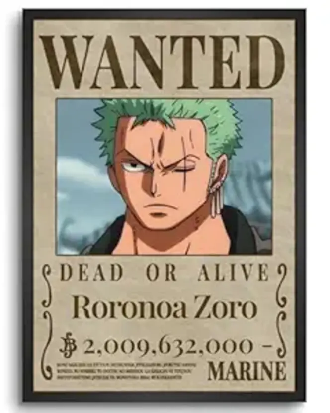
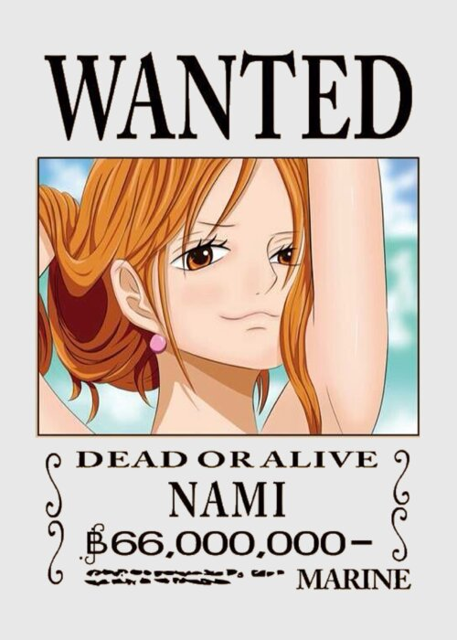
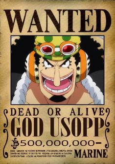
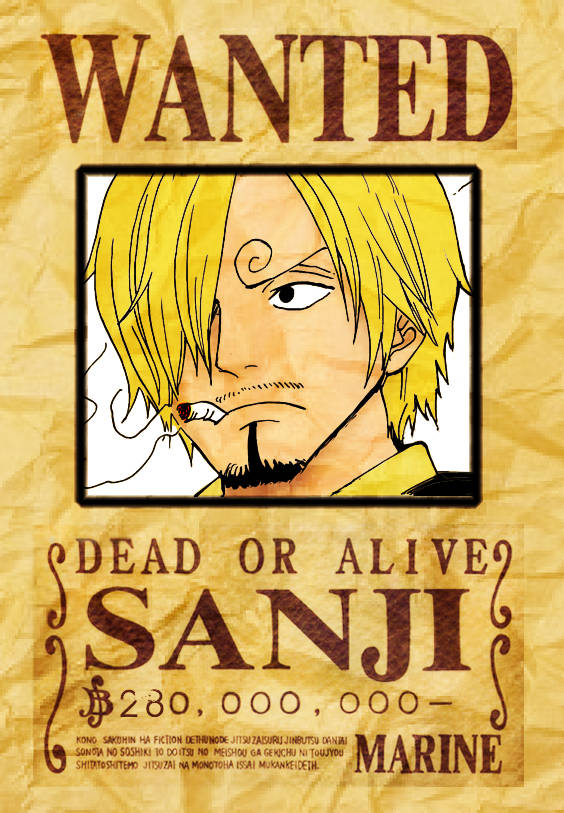
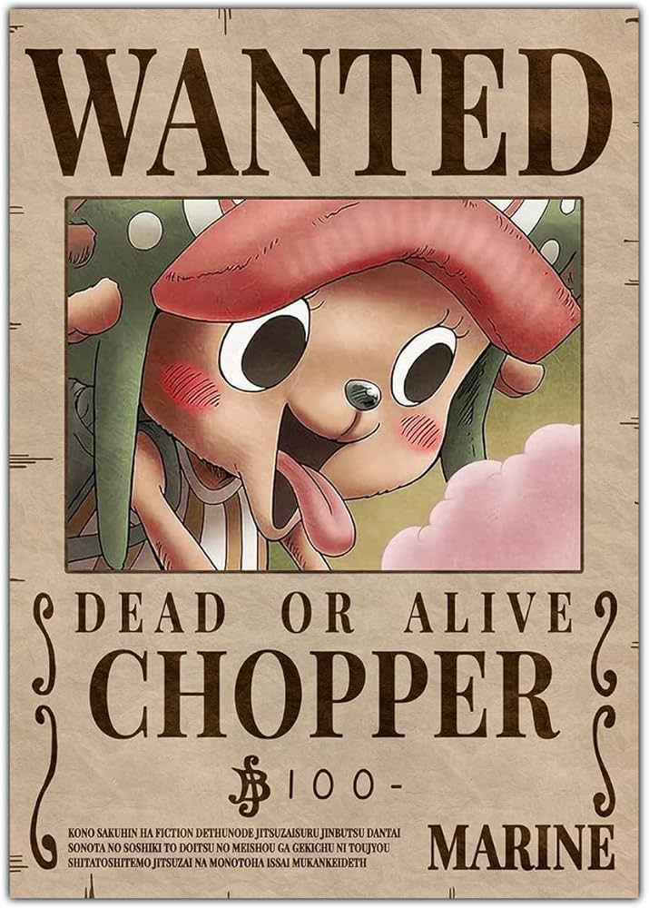
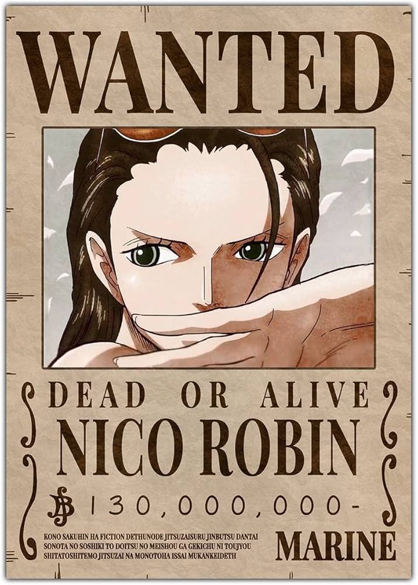
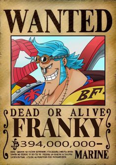
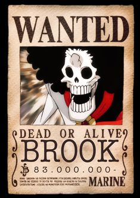
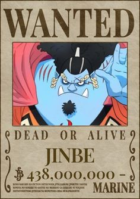

The Straw Hat Pirates
The legendary crew sailing under the Jolly Roger.

Monkey D. Luffy
3,000,000,000 BerriesCaptain of the Straw Hat Pirates. His goal is to become the King of the Pirates by finding the legendary treasure, One Piece.

Roronoa Zoro
1,111,000,000 BerriesSwordsman of the crew. He aims to become the greatest swordsman in the world by defeating Dracule Mihawk.

Nami
366,000,000 BerriesNavigator of the Straw Hat Pirates. She dreams of drawing a complete map of the entire world.

Usopp
200,000,000 BerriesSniper and storyteller. A master of long-range combat and skilled inventor of gadgets.

Sanji
1,032,000,000 BerriesCook of the crew. He dreams of finding the All Blue, a legendary sea where all the world's seas meet.

Tony Tony Chopper
1,000 BerriesDoctor of the crew. A reindeer who ate the Human-Human Fruit, giving him the ability to transform.

Nico Robin
930,000,000 BerriesArchaeologist of the crew. She seeks to uncover the true history of the world and the Void Century.

Franky
394,000,000 BerriesShipwright and cyborg. He built the Thousand Sunny and possesses incredible mechanical strength.

Brook
383,000,000 BerriesMusician of the crew. A living skeleton who ate the Revive-Revive Fruit, allowing him to return from death.

Jinbe
1,100,000,000 BerriesHelmsman of the crew. A fish-man and master of Fish-Man Karate with deep loyalty and honor.